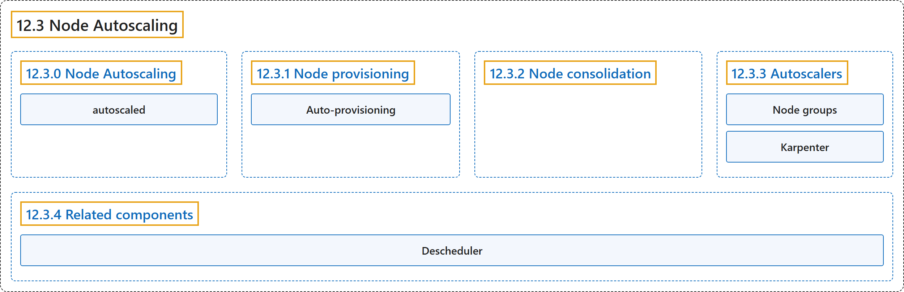

12.3 Node Autoscaling
Classification

Glossary
| Term | Definition | 中文翻译 | Source |
|---|---|---|---|
| 12.3 Node Autoscaling 节点自动扩缩 |
"Automatically provision and consolidate the Nodes in your cluster to adapt to demand and optimize cost." | 自动供应和合并集群中的节点，以适应需求并优化成本。 | The Kubernetes Authors, n.d., "Node Autoscaling", para. 1 |
| 12.3.0 Node Autoscaling 节点自动扩缩 |
(No definition) | （无定义） | The Kubernetes Authors, n.d., "Node Autoscaling" |
| autoscaled 自动扩缩 |
"Nodes in your cluster can be autoscaled - dynamically provisioned, or consolidated to provide needed capacity while optimizing cost." | 集群中的节点可以被自动扩缩（动态供应或合并），以在提供所需容量的同时优化成本。 | The Kubernetes Authors, n.d., "Node Autoscaling", para. 2 |
| 12.3.1 Node provisioning 节点供应 |
"If there are Pods in a cluster that can't be scheduled on existing Nodes, new Nodes can be automatically added to the cluster—provisioned—to accommodate the Pods." | 如果集群中有 Pod 无法调度到现有节点上，就可以自动向集群添加新节点（即供应）来容纳这些 Pod。 | The Kubernetes Authors, n.d., "Node provisioning", para. 1 |
| Auto-provisioning 自动供应 |
"Node auto-provisioning is a mode of provisioning in which a user doesn't have to fully configure the specifics of the Nodes that can be provisioned." | 节点自动供应是一种供应模式，用户不必完整配置可供应节点的各项细节。 | The Kubernetes Authors, n.d., "Auto-provisioning", para. 1 |
| 12.3.2 Node consolidation 节点合并 |
(context) "The main consideration when running a cluster is ensuring that all schedulable pods are running, whilst keeping the cost of the cluster as low as possible." | （语境）运行集群时的主要考虑是确保所有可调度的 Pod 都在运行，同时让集群成本尽可能低。 | The Kubernetes Authors, n.d., "Node consolidation", para. 1 |
| 12.3.3 Autoscalers 自动扩缩器 |
"The functionalities described in previous sections are provided by Node autoscalers." | 前面各节所述的功能由节点自动扩缩器提供。 | The Kubernetes Authors, n.d., "Autoscalers", para. 1 |
| Node groups 节点组 |
"Cluster Autoscaler adds or removes Nodes to pre-configured Node groups." | Cluster Autoscaler 添加或移除节点，对象是预先配置的节点组。 | The Kubernetes Authors, n.d., "Cluster Autoscaler", para. 1 |
| Karpenter Karpenter |
"Karpenter auto-provisions Nodes based on NodePool configurations provided by the cluster operator." | Karpenter 自动供应节点，依据是 NodePool 配置，由集群运维人员提供。 | The Kubernetes Authors, n.d., "Karpenter", para. 1 |
| 12.3.4 Related components 相关组件 |
(No definition) | （无定义） | The Kubernetes Authors, n.d., "Related components" |
| Descheduler Descheduler |
"The descheduler is a component providing Node consolidation functionality based on custom policies" | descheduler 是一个组件，提供节点合并功能，基于自定义策略 | The Kubernetes Authors, n.d., "Descheduler", para. 1 |
References
The Kubernetes Authors. (n.d.). Node Autoscaling. Kubernetes Documentation. Retrieved October 31, 2026, from https://kubernetes.io/docs/concepts/cluster-administration/node-autoscaling/